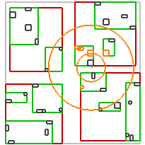
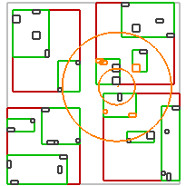

|
Home | Libraries | People | FAQ | More |


Nearest neighbours queries returns Values
which are closest to some point in space. Additionally it is possible to
pass distance predicates in order to define how the distance to the Value should be calculated or minimal and
maximal distances. The examples of some knn queries may be found in the table
below. All queries returns 5 closest Values.
The query point, region and result Values are orange.
|
Basic knn query |
knn query - distance to Indexable's furthest point greather than ... |
knn query - distance to Indexable's closest point greather than ... |
|---|---|---|
|
|
 |
 |
There are three ways of performing knn queries. Following queries returns
k Values closest to some point in space. For Boxes
Indexables the distance to the nearest point is calculated
by default.
Method call
std::vector<Value> returned_values; Point pt(...); rt.nearest_query(pt, k, std::back_inserter(returned_values));
Function call
std::vector<Value> returned_values; Point pt(...); index::nearest_query(rt, pt, k, std::back_inserter(returned_values));
Use of operator |
Point pt(...); BOOST_FOREACH(Value & v, rt | index::adaptors::nearest_queried(pt, k)) ; // do something with v
Another type of nearest neighbour query is searching for the one closest
Value. If it is found, 1 is returned by the method or function.
This kind of query has only two forms.
Method call
Value returned_value; Point pt(...); size_t n = rt.nearest_query(pt, returned_value);
Function call
Value Value returned_value; Point pt(...); size_t n = index::nearest_query(rt, pt, returned_value);
It is possible to define if calculated distance between query point and
Value should be greater, lesser or between some other distances.
Those are called DistancesPredicates
and may be defined as follows.
std::vector<__Value__> returned_values; Point pt(...); /* default - without bounds */ index::nearest_query(rt, pt, k, std::back_inserter(returned_values)); /* same as default */ index::nearest_query(rt, index::unbounded(pt), k, std::back_inserter(returned_values)); /* distance must be greater than or equal to 10 */ index::nearest_query(rt, index::min_bounded(pt, 10), k, std::back_inserter(returned_values)); /* distance must be lesser than or equal to 500 */ index::nearest_query(rt, index::max_bounded(pt, 500), k, std::back_inserter(returned_values)); /* distance must be between 10 and 500 */ index::nearest_query(rt, index::bounded(pt, 10, 500), k, std::back_inserter(returned_values));
Furthermore, it's possible to define if the closest, furthest or centroidal
point of the non-point Indexable should be taken into account
in the routine calculating distance.
std::vector<Value> returned_values; Point pt(...); /* default - distance between Indexable's closest point and a query point must be greater than 10 */ index::nearest_query(rt, index::min_bounded(pt, 10), k, std::back_inserter(returned_values)); /* same as default - distance between Indexable's closest point and a query point must be greater than 10 */ index::nearest_query(rt, index::min_bounded(pt, index::to_nearest(10)), k, std::back_inserter(returned_values)); /* distance between Indexable's furthest point and a query point must be greater than 10 */ index::nearest_query(rt, index::min_bounded(pt, index::to_furthest(10)), k, std::back_inserter(returned_values)); /* distance between Indexable's centroid and a query point must be greater than 10 */ index::nearest_query(rt, index::min_bounded(pt, index::to_centroid(10)), k, std::back_inserter(returned_values));
It is possible to use spatial predicates described before in nearest neighbours queries.
Value returned_value; std::vector<Value> returned_values; Point pt(...); Box b(...); size_t n1 = rt.nearest_query(index::bounded(pt, index::to_furthest(1), 10), index::intersects(b), returned_value); size_t n2 = index::nearest_query(rt, pt, k, index::within(b), std::back_inserter(returned_values)); BOOST_FOREACH(Value & v, rt | index::adaptors::nearest_queried(pt, k, index::covered_by(b))) ; // do something with v